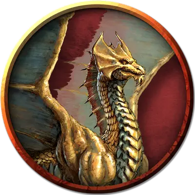

Молодой латунный дракон
Young Brass Dragon
Большой Дракон, хаотично-добрый

Класс Доспеха 17
Хиты 110 (13к10 + 39)
Скорость 40 футов, летая 80 футов, копая 20 футов
| мод | спас | ||
|---|---|---|---|
| СИЛ | 19 | +4 | +4 |
| ЛОВ | 10 | +0 | +3 |
| ТЕЛ | 17 | +3 | +6 |
| мод | спас | ||
|---|---|---|---|
| ИНТ | 12 | +1 | +1 |
| МДР | 11 | +0 | +3 |
| ХАР | 15 | +2 | +5 |
Навыки Восприятие +6, Скрытность +3, Убеждение +5
Иммунитет к урону огонь
Чувства слепое зрение 30 футов, тёмное зрение 120 футов, пассивное Восприятие 16
Языки Общий, Драконий
Опасность 6 (2300 опыта)
Бонус мастерства +3
Среда обитания Пустыня
Действия
Мультиатака. Дракон совершает три атаки: одну укусом, и две когтями.
Укус. Рукопашная атака оружием: +7 к попаданию, досягаемость 10 футов, одна цель. Попадание: Колющий урон 15 (2к10 + 4).
Коготь. Рукопашная атака оружием: +7 к попаданию, досягаемость 5 футов, одна цель. Попадание: Рубящий урон 11 (2к6 + 4).
Оружия дыхания (перезарядка 5–6). Дракон использует один из следующих видов оружия дыхания.
• Огненное дыхание. Дракон выдыхает огонь 40-футовой линией шириной 5 футов. Все существа в этой линии должны совершить спасбросок Ловкости Сл 14, получая урон огнём 42 (12к6) при провале, или половину этого урона при успехе.
• Усыпляющее дыхание. Дракон выдыхает усыпляющий газ 30-футовым конусом. Все существа в этой области должны преуспеть в спасброске Телосложения Сл 14, иначе потеряют сознание на 5 минут. Этот эффект оканчивается для существа, если оно получает урон или кто-нибудь действием разбудит его.
Опциональные правила
Драконы и врождённое колдовство. Драконы обладают врождёнными способностями к колдовству, и могут с возрастом осваивать новые заклинания при использовании этого опционального правила.
Молодые и более старые драконы могут накладывать количество заклинаний, равное их модификатору Харизмы. Каждое заклинание может быть наложено лишь один раз за день, не требуя материальных компонентов, и уровень заклинания не может превышать трети показателя опасности дракона (округляя в меньшую сторону).
Бонус к попаданию атак заклинаниями дракона равен его бонусу мастерства + его бонус Харизмы. Сл спасбросков от заклинаний дракона равна 8 + его бонус мастерства + его модификатор Харизмы. (Monster Manual)
Драконы и врождённое колдовство. Этот дракон от природы может накладывать два заклинания, 1/день каждое, и ему не требуются для этого материальные компоненты. Уровень каждого заклинания не может быть выше 2-го. Заклинание дракона, имеют Сл спасброска 13, и он имеет +5 к попаданию атаками заклинаниями.
Ниже приведен список предлагаемых заклинаний, но вы также можете выбрать заклинания, отражающие характер дракона. Дракон, который от природы накладывает заклинания друидов, ведёт себя иначе, чем тот, кто накладывает заклинания колдуна. Вы также можете дать дракону заклинания более высокого уровня, чем позволяет это правило, но такая настройка может повысить ПО дракона — особенно если эти заклинания наносят урон или накладывают состояния на цели.
• Сотворение или уничтожение воды [create or destroy water];
• Разговор с животными [speak with animals]. (Fizban's Treasury of Dragons)
Персонализация дракона. Как уже говорилось в «Руководстве Мастера», вы можете настроить блок статистики любого дракона, чтобы отразить его уникальный характер. Незначительные изменения, такие как приведенные ниже, легко сделать, и они не влияют на ПО дракона. (Fizban's Treasury of Dragons)
Языки. Большинство драконов предпочитают говорить на Драконьем, но для общения с союзниками и приспешниками изучают Общий. Но, учитывая высокий Интеллект и продолжительный срок жизни, драконы могут легко выучить дополнительные языки. Вы можете добавить языки в блок статистики дракона.
Навыки. Большинство драконов владеют навыками Восприятие и Скрытность, а многие драконы владеют дополнительными навыками. Как и в случае с языками, вы можете изменить список навыков дракона (даже удвоить бонус мастерства), чтобы отразить его интересы и занятия. Вы также можете наделить дракона владениями инструментами, особенно если дракон проводит время в гуманоидной форме.
Заклинания. Опциональное правило «Бестиария» о том, чтобы сделать драконов с врожденным колдовством, — это простой способ добавить драконам разнообразия, не влияя на их ПО. В Главе 5 «Дракономикон» предлагаются списки заклинаний для разных видов драконов, но вы также можете выбрать заклинания, отражающие характер дракона. Дракон, который от природы накладывает заклинания друидов, ведёт себя иначе, чем тот, кто накладывает заклинания колдуна. Вы также можете дать дракону заклинания более высокого уровня, чем позволяет это правило, но такая настройка может повысить ПО дракона — особенно если эти заклинания наносят урон или накладывают состояния на цели.
Другие черты и действия. Вы можете заимствовать черты и действия у других монстров, чтобы придать дракону уникальную изюминку. Рассмотрим эти примеры:
Изменение формы. Вы можете решить, что дракон приобретает это действие в более раннем возрасте, чем обычно, особенно если вы хотите представить в своей кампании дракона в гуманоидной форме. (См. металлические драконы).
Поглощение урона. Вы можете решить, что красный или золотой дракон не только не получает урон от огня, но и исцеляется от него. (См. мясной голем [flesh golem]).
Облёт. Дракон - проворный летун, быстро вылетающий из зоны досягаемости врагов. (См. перитон [peryton]).
Подражание. Изображение персонажей или их союзников может стать забавным трюком для хитрого дракона. (См. кенку [kenku]).
Омоложение. Вы можете решить, что драконы в вашей кампании, будучи неотъемлемой частью Материального плана, почти невозможно уничтожить. Жизненная сущность дракона может храниться в яйце, из которого он появился на свет, в его кладе или в пещерном зале в центре мира, так же как сущность лича спрятана в филактерии. (См. лич [lich]).
Особые чувства. У большинства драконов есть слепое зрение и темное зрение. Вы можете улучшить зрение до истинного зрения или наделить дракона скоростью рытья или чувством вибрации. (См. зрение и свет).
Прокладывание туннеля. Эта особенность может быть присуща любому дракону, обладающему скоростью копания - он может двигаться сквозь твёрдую породу, оставляя за собой туннель. (См. бурый увалень [umber hulk]).
Описание
Самые общительные из истинных драконов, латунные драконы обожают разговоры, солнечный свет и горячий, сухой климат.
Голова латунного дракона окаймляется широкой защитной пластиной, отходящей от его лба и шипами, выступающими из его подбородка. Перепончатый гребень бежит вдоль всей его шеи, а его сужающиеся крылья простираются до самого кончика хвоста. Чешуя вирмлингов латунных драконов тускло-коричневая с пятнами. По мере роста дракона чешуйки приобретают тёплый оттенок и начинают блестеть, будто полированные. Его крылья и перепонки, покрытые зелёными точками на краях, темнеют с возрастом. Когда латунный дракон становится старше, его зрачки постепенно исчезают, пока глаза не становятся похожи на расплавленные металлические шары.
Отчаянный болтун. Латунный дракон общается с тысячами существ на протяжении своей долгой жизни, накапливая полезную информацию, которой он с удовольствием поделится в обмен на подарок в сокровищницу. Если разумное существо попытается сбежать от латунного дракона, не вступая в диалог, дракон последует за ним. Если существо пытается сбежать, используя магию или силу, дракон в порыве досады может использовать усыпляющий газ, чтобы обездвижить существо. Когда оно просыпается, существо осознает себя прижатым к земле гигантскими когтями или закопанным в песок по шею, в то время пока дракон удовлетворяет свою жажду небольшой беседы.
Латунный дракон доверяет существам, которые наслаждаются беседой так же, как и он, но он достаточно умён, чтобы заметить, когда им пытаются манипулировать. Когда это происходит, дракон, как правило, отвечает по-доброму, расценивая попытки обмануть друг друга как игру.
Ценные сокровища. Латунные драконы любят магические предметы, которые позволяют им общаться с интересными личностями. Разумное телепатическое оружие или волшебная лампа с джинном, заточённым внутри, являются одними из самых величайших сокровищ, которыми может обладать латунный дракон.
Латунные драконы скрывают свои сокровища под насыпями песка или в тайных закромах вдали от своего основного логова. У них не возникает никаких проблем с запоминанием места, где спрятаны их сокровища, а потому нет никакой необходимости в картах. Искатели приключений и странники должны быть осторожны, если они находят скрытый сундук в оазисе или сокровища, спрятанные в наполовину поглощённых пустыней руинах, ибо это может быть частью клада латунного дракона.
См. дополнительно статью: "Бестиарий: Драконы"